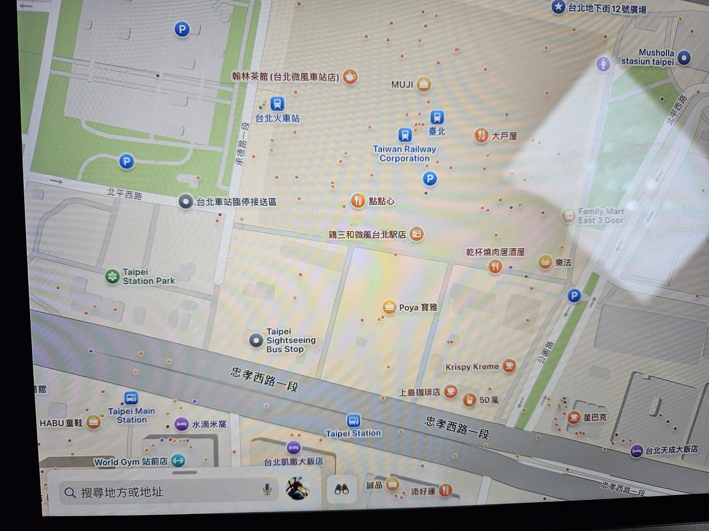
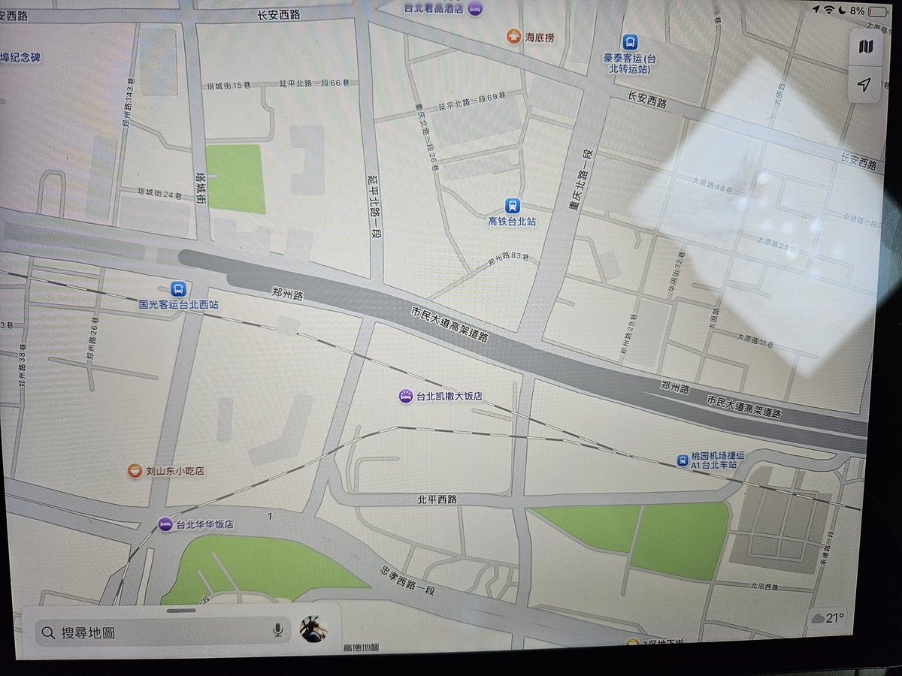

@PrinzEugenOwO 经过技术分析后确定他连接了中国大陆的基站了🤣🤣🤣




这下可以彻底鉴定他在中国大陆了，以及他蠢到连劫持并修改Apple的基站认证信息都不会
图1是Apple识别到用户连接非中国大陆基站的时候提供的国际版本地图的台北车站附近地图，可以看到颜色与其的截屏并不相符
图2是Apple识别到用户连接到中国大陆基站的时候提供的提供地图，与其截屏相符 https://t.co/OzqmRX68tY https://t.co/Z5EXS2g6C4
图1是Apple识别到用户连接非中国大陆基站的时候提供的国际版本地图的台北车站附近地图，可以看到颜色与其的截屏并不相符
图2是Apple识别到用户连接到中国大陆基站的时候提供的提供地图，与其截屏相符 https://t.co/OzqmRX68tY https://t.co/Z5EXS2g6C4
你他媽跟我約幾點？你是在裝什麼傻
姓名:许开冲
身份证号码：511321199403253492
出生年月：1994年03月25日
户籍地址：四川省南部县碧龙乡许家桥村1组
手机号1：18683613021
手机号2：18328503492
手机号3：18080475203
手机归属地 ：四川 成都
服务商：中国联通
邮箱：washion1856@163.com https://t.co/v7UvtSvRAP
姓名:许开冲
身份证号码：511321199403253492
出生年月：1994年03月25日
户籍地址：四川省南部县碧龙乡许家桥村1组
手机号1：18683613021
手机号2：18328503492
手机号3：18080475203
手机归属地 ：四川 成都
服务商：中国联通
邮箱：washion1856@163.com https://t.co/v7UvtSvRAP